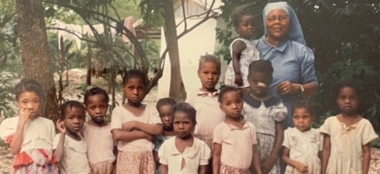
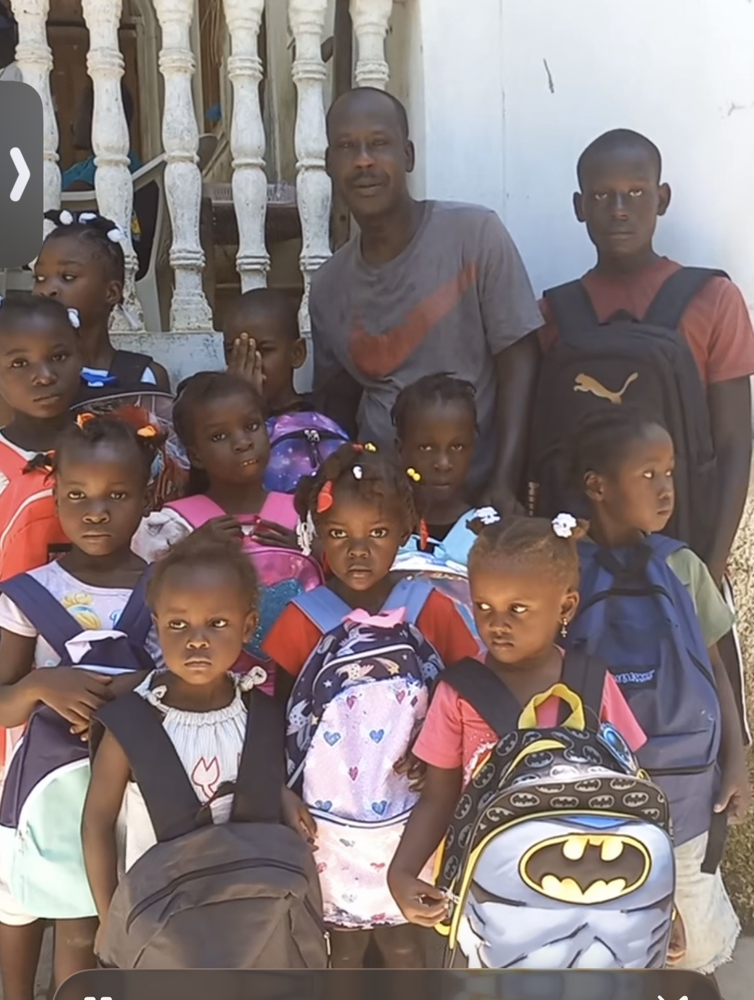
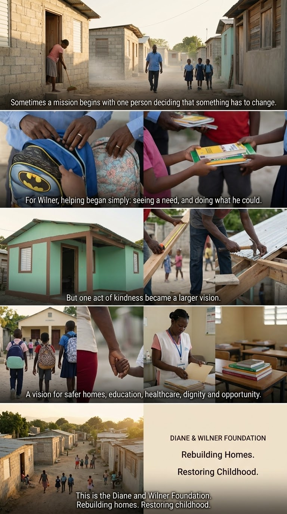

Children arrive ready to learn
Tuition, backpacks, and school supplies help children take part in school today.
Consent confirmation required before public launchDiane & Wilner Foundation · Haiti & the U.S.
Supporting children and families through education, healthcare, safer homes, dignity, and opportunity.

Why we exist
Wilner knows firsthand what a caring person can mean in a child’s life. When he was seven years old, the Sister took him in and raised him. Her care shaped his life and the lives of many other children. Some followed in her footsteps, becoming nuns and priests themselves and extending that same kindness to others.
Before she passed away, she had given her all to the children in her care. It was a lifetime mission rooted in a grateful heart—a reflection of the love and generosity taught in the Bible. She paid it forward, and the children whose lives she touched continued to do the same.
Today, Wilner carries that care forward. It breaks his heart to see children eager to learn without the supplies they need. Resources are limited, but he is determined to help as many children as he can. He wants them to be healthy, safely housed, and fed, able to walk into a classroom ready to learn without worrying about the tools they need to do their work.
For Wilner, this mission is deeply personal. He remembers being the child who needed someone to care. Through the Diane & Wilner Foundation, he hopes to offer other children that same chance—to grow with dignity, develop brighter minds, and one day strengthen their own communities.
Tuition, backpacks, and school supplies help children take part in school today.
Consent confirmation required before public launch
Wilner’s backpack drives help children prepare to learn with confidence.
Consent confirmation required before public launch
The long-term vision includes homes, a school, and medical clinics for Haitian children and families.
A legacy of love
The Diane & Wilner Foundation honors Diane through work that keeps families, possibility, and childhood at the center.
How we help
Tuition, backpacks, and school supplies that help children learn today.
Care today and a future vision for medical clinics rooted in dignity.
Safer homes and community support that make stronger futures possible.
Community updates
Practical school support helps children begin each school year prepared.
Mission-led relationships guide how the Foundation listens and responds.
Every gift moves the shared vision for homes, a school, and clinics forward.
Transparency
Federal recognition
Annual filing record
Florida organization
Stay connected
To share support, arrange an in-kind contribution, or connect with the Foundation, email info@dianeandwilnerfoundation.org.
Give or send supplies